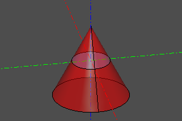
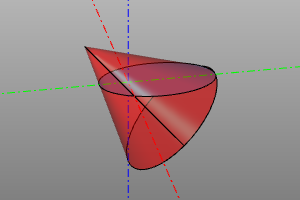
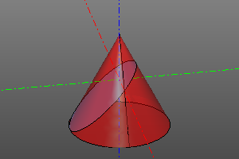
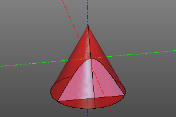
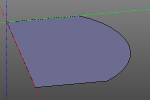
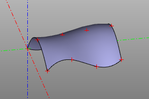

Плоские примитивы.
В этом разделе приводятся плоские примитивы. Обычно они используются совместно с 3д операциями для построения тел со сложной геометрией.
Прямоугольник
Плоский примитив - прямоугольник. Задаётся двумя сторонами. Допустимо не указывать вторую сторону, что будет соответствовать построению квадрата. Установка опции center совмещает геометрический центр тела с началом координат. При установке опции wire вместо залитой грани будет сгенерирован цикл прямоугольника.
Сигнатура:
rectangle(x, y, center=True/False, wire=True/False)
rectangle(a, center=True/False, wire=True/False)
square(a, center=True/False, wire=True/False) #alternate


Окружность/Круг
Окружность задаётся радиусом r. Установка необязательной опции angle позволяет сгенерировать сектор круга / дугу окружности. При установке опции wire вместо залитой грани круга будет сгенерирована каркасная окружность.
Сигнатура:
circle(r=radius, wire=True/False)
circle(r=radius, angle=angle, wire=True/False)
circle(r=radius, angle=(start, stop), wire=True/False)


Элипс
Плоский примитив - эллипс. Задаётся двумя радиусами, причем r1 должен быть больше r2. Также можно построить сектор, указав угол или пару углов как необязательный параметр angle. При установке опции wire вместо залитой грани будет сгенерирован каркас.
Сигнатура:
ellipse(r1=major, r2=minor, wire=True/False)
ellipse(r1=major, r2=minor, angle=angle, wire=True/False)
ellipse(r1=major, r2=minor, angle=(start, stop), wire=True/False)


Полигон
Плоский примитив - полигон. Строится по точкам вершин. При установке опции wire вместо залитой грани будет сгенерирован каркас (что аналогично закрытому полисегменту.). pnts - массив точек вершин.
Сигнатура:
polygon(pnts=pnts, wire=True/False)


Правильный многоугольник
Плоский примитив - правильный многоугольник. Задаются радиус и количество вершин. При установке опции wire вместо залитой грани будет сгенерирован каркас.
Сигнатура:
ngon(r=radius, n=vertexCount, wire=True/False)


Текст
Плоский примитив - текст. Создаёт грань на основе строки и шрифта. Шрифт указывается в виде пути на файл формата ttf (FreeType).
Сигнатура:
textshape(text=textString, fontpath=pathToFont, size=fontSize)


Бесконечная плоскость
Бесконечная плоскость - специальный геометрический объект, который может использоваться в некоторых операцих над другими объектами. Бесконечная плоскость не может быть отображена непосредственно.
Сигнатура:
infplane()
Пример (Построение конических сечений):
cone(r1=5, r2=0, h=10, center=True) ^ infplane()
cone(r1=5, r2=0, h=10, center=True).rotX(deg(45)) ^ infplane()
cone(r1=5, r2=0, h=10, center=True) ^ infplane().rotX(deg(45))
cone(r1=5, r2=0, h=10, center=True) ^ infplane().rotX(deg(90)).right(3)




Заполнение контура
Данная операция применяется к плоской замкнутой линии wire и превращает ее в грань.
Сигнатура:
fill(wire)
wire.fill() #alternate
Пример:
wire = sew([
segment((0,0,0), (0,10,0)),
circle_arc((0,10,0),(10,15,0),(20,10,0)),
segment((20,0,0), (20,10,0)),
segment((20,0,0), (0,0,0))
])
fill(wire)
| До | После |
|---|---|
 |
 |
Интерполяция поверхности по массиву точек
Строит bspline поверхность интерполируя 2д массив точек. Масив задаётся двумерным списком. degmin и degmax задают минимальную и максимальную степени интерполяционного полинома, соответственно.
Сигнатура:
interpolate2(pnts, degmin=3, degmax=7)
Пример:
POINTS = points2([
[(0,0,0), (10,0,7), (20,0,5)],
[(0,5,0), (10,5,7.5), (20,5,7)],
[(0,10,2), (10,10,8), (20,10,5)],
[(0,15,1.3), (10,15,8.5), (20,15,6)],
])
m = interpolate2(POINTS)
disp(m)
disp(POINTS, color=color.red)
